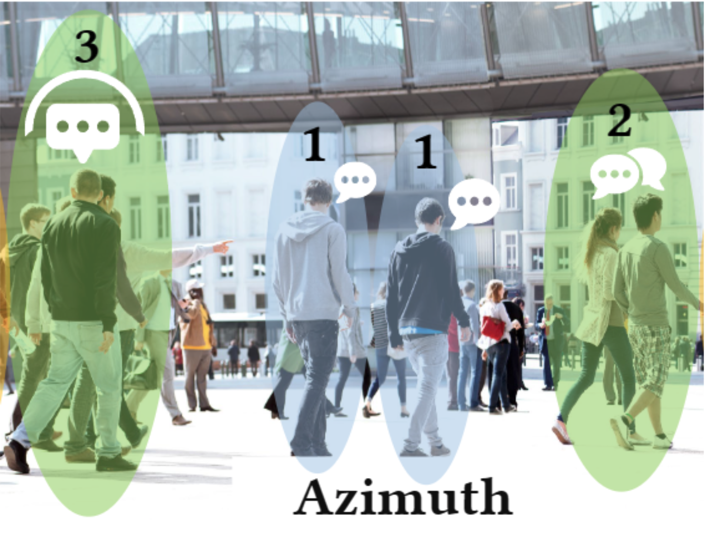
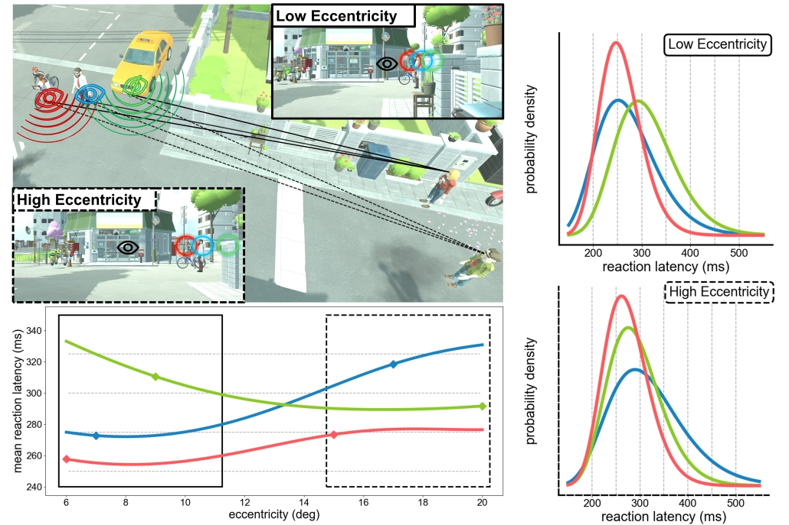

|
Hello there, I'm Xi!I am a first year Ph.D. student at UNC Chapel Hill advised by Prof. Praneeth Chakravarthula. In my master's study at NYU, I was fortunately working at NYU Immersive Computing Lab advised by Prof. Qi Sun. My current research revolves around VR/AR, perceptual computer graphics, computational imaging, and machine learning. |

|
Publications |
|  |
Xi Peng, Kenneth Chen, Iran Roman, Juan Pablo Bello, Qi Sun*, Praneeth Chakravarthula* IEEE VR 2025 Paper |

|
Guansen Tong*, Jonathan Leung*, Xi Peng, Haosheng Shi, Liujie Zheng, Shengze Wang, Arryn Carlos O'Brien, Ashley Paula-Ann Neall, Grace Fei, Martim Gaspar, Praneeth Chakravarthula IEEE Transactions on Visualization and Computer Graphics (TVCG 2025) Best paper Honoable Mention Paper |

|
Zihao Zou, Ziyuan Qu, Xi Peng, Vivek Boominathan, Adithya Pediredla, Praneeth Chakravarthula arXiv preprint arXiv:2502.04630 2025 Paper |
|  |
Xi Peng, Yunxiang Zhang, Daniel Jiménez Navarro, Ana Serrano, Karol Myszkowski, Qi Sun IEEE Transactions on Visualization and Computer Graphics (TVCG 2024) Paper / Project Page |

|
Daniel Jiménez Navarro, Xi Peng, Yunxiang Zhang, Karol Myszkowski, Hans-Peter Seidel, Qi Sun, Ana Serrano ACM SIGGRAPH 2024 Paper / Project Page |

|
Fengze Zhang*, Yunxiang Zhang*, Xi Peng, Sky Achitoff, Paul M. Torrens, Qi Sun IEEE International Symposium on Mixed and Augmented Reality (ISMAR 2024) Paper / Project Page / Code |
|
Template borrowed from Jon Barron |